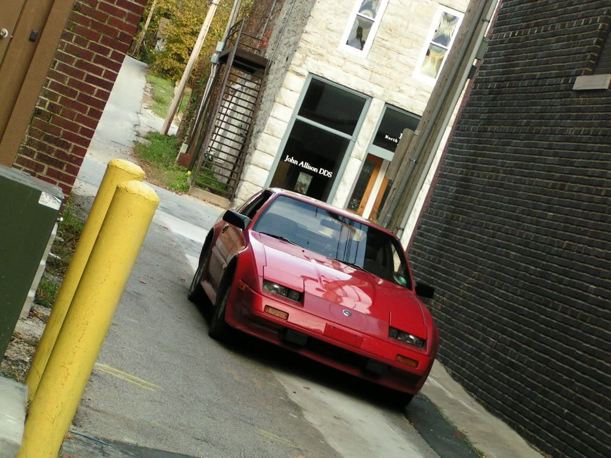
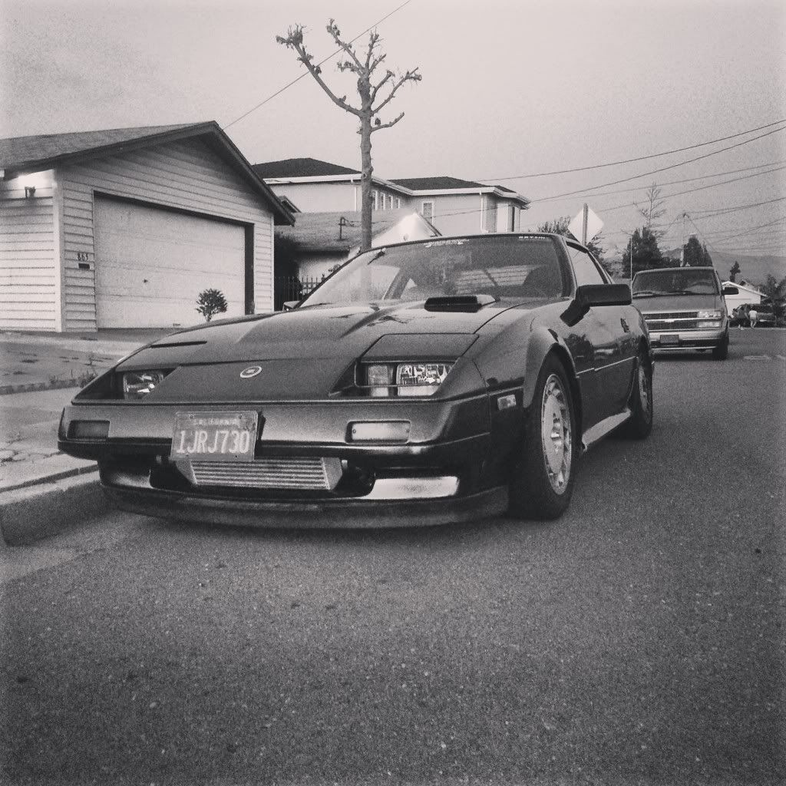

-
or i can look at them and comment on them? yeah. i think i'll do that instead. -
I don't like the Zenki front bumper unless it has louvered headlights, or at least the plastic headlight covers. Maybe I'm just biased because my first car was a Kouki. Still, the smoked Zenki tails are hawt. I'm beginning to agree with what nearly everyone says… Best look is an '86T with the kouki front end and an SS lip. Wet dream material from every angle. Not that I don't like the Zenki, obviously, as that is what I own, lol!"Understeer is when you hit the wall with the front of the car. Oversteer is when you hit the wall with the rear of the car. Horsepower is how fast you hit the wall. Torque is how far you take the wall with you…"
-'68 Datsun 1600 Roadster
Build Thread: http://community.ratsun.net/topic/21…-build-thread/
-'85 300zx Turbo
Build Thread: http://z31performance.com/showthread…)build-thread! -
Originally, I didn't care for the Zenki bumper. There are still some angles that look funny, but overall it's grown on me. On mine… I feel the fog lights help to balance out the front. At least helps with the upper bumper overhang. If only they weren't so finicky.

Too bad it's battleshipped to hell.'86 300ZXT GLL
'78 Datsun 280Z BP
'11 Saab 9-3 Aero XWD -
http://youtu.be/iJnyjJ1KB3M[/video]]
Really liking the clear headlight covers on this Z. Pretty much everything on that Z is nice.
and if anyone notices, he has a louver shade on the inside of his hatch -
Sexy car, TERRIBLE, TERRIBLE editing. Wow. I like the kit and the headlight covers though, it really shows off the Zenki's good side!Ven;325120 wrote: http://youtu.be/iJnyjJ1KB3M[/video]]
Really liking the clear headlight covers on this Z. Pretty much everything on that Z is nice.
and if anyone notices, he has a louver shade on the inside of his hatch"Understeer is when you hit the wall with the front of the car. Oversteer is when you hit the wall with the rear of the car. Horsepower is how fast you hit the wall. Torque is how far you take the wall with you…"
-'68 Datsun 1600 Roadster
Build Thread: http://community.ratsun.net/topic/21…-build-thread/
-'85 300zx Turbo
Build Thread: http://z31performance.com/showthread…)build-thread! -
That car might have looked awesome with MC Hammer blasting out of the speakers, but it just looks so ungainly nowadays. It's very cluttered-looking. Also, those clear plastic headlight things look just like what they are, cheap plastic panels from Home Depot.....IMHO. Throw them on the pile with your rear window louvers to be blown up.
As for the driving. This guy actually seems pretty good. I'm guessing the car is open-diffed, with a boost-up, probably 250hp. It's hard as hell to slide, and he makes up for it with speed and balls. You can hear the chirp as he prematurely regains traction, despite still at WOT. He could have kept it going with clutch kicking, but it probably wasn't invented yet! This is actually a pretty famous video in the drifting community as it's one of the oldest known films. My friends and I all laugh at it, while at the same time wondering who the hell this guy was (or became).sigpic -
2001 Mazda Miata LS
also a 1989 Nissan 240SX
50th AE Build Thread SOLD 2015 -
That guy is also pretty ballsy to have his plates in the video too.Butter;325232 wrote: That car might have looked awesome with MC Hammer blasting out of the speakers, but it just looks so ungainly nowadays. It's very cluttered-looking. Also, those clear plastic headlight things look just like what they are, cheap plastic panels from Home Depot.....IMHO. Throw them on the pile with your rear window louvers to be blown up.
As for the driving. This guy actually seems pretty good. I'm guessing the car is open-diffed, with a boost-up, probably 250hp. It's hard as hell to slide, and he makes up for it with speed and balls. You can hear the chirp as he prematurely regains traction, despite still at WOT. He could have kept it going with clutch kicking, but it probably wasn't invented yet! This is actually a pretty famous video in the drifting community as it's one of the oldest known films. My friends and I all laugh at it, while at the same time wondering who the hell this guy was (or became).
I remember the old "pluspy" vids that Keiichi Tsuchiya took back in the 80s when he was drifting his AE86 through mountain passes that got his racing license suspended. -
Jaqattack02's, I just rolled it off the alignment rack. still a Chuki for now, havent swapped the nose!
Damn dirty angels....these cars!
Current Daily Driver - 86 Turbo.
Under the cover - THE BANANA… that needs to be re-energized.
sigpic -
terrible editing? that thing was probably filmed using a cam-corder the size of your engine, onto a VHS tape, and cut and spliced together with an exacto knife and scotch tape.Tomakze;325194 wrote: Sexy car, TERRIBLE, TERRIBLE editing. Wow. I like the kit and the headlight covers though, it really shows off the Zenki's good side!
spoiled, are we? -
Perhaps I am, but that doesn't change the fact that it jumps scenes so fast sometimes that it is disorienting. Just because it is old, doesn't excuse it! Bad editing is bad editing. Still, cool car."Understeer is when you hit the wall with the front of the car. Oversteer is when you hit the wall with the rear of the car. Horsepower is how fast you hit the wall. Torque is how far you take the wall with you…"
-'68 Datsun 1600 Roadster
Build Thread: http://community.ratsun.net/topic/21…-build-thread/
-'85 300zx Turbo
Build Thread: http://z31performance.com/showthread…)build-thread! -
Never edit a video on meth. -
Careless just needed something to say.Tomakze;325333 wrote: Perhaps I am, but that doesn't change the fact that it jumps scenes so fast sometimes that it is disorienting. Just because it is old, doesn't excuse it! Bad editing is bad editing. Still, cool car. -
2001 Mazda Miata LS
also a 1989 Nissan 240SX
50th AE Build Thread SOLD 2015 -

Out with the Kaminari, in with a Volvo lip. Straight zip-tie on
"Let's play Battleship! There's enough Z's for that.."
My thread thingy: http://z31performance.com/showthread…ep-Zed-84Zed31

Copyright © 2006–. All rights reserved. Privacy Policy